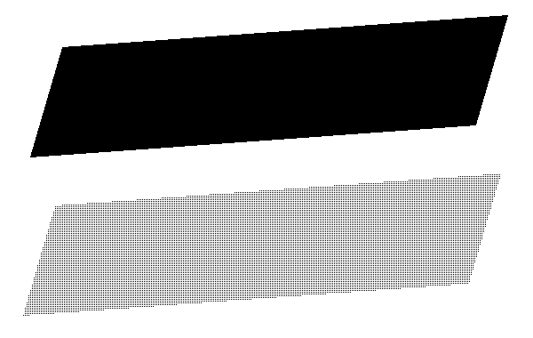
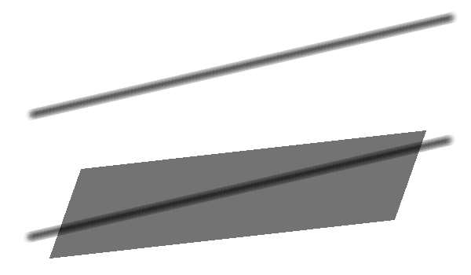
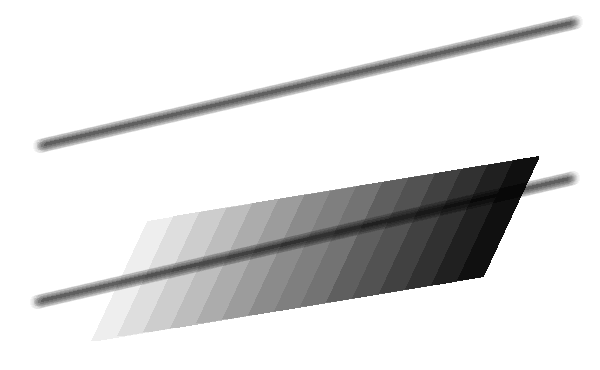
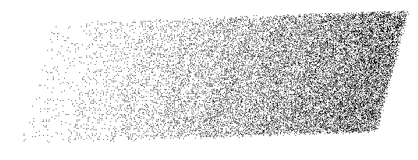
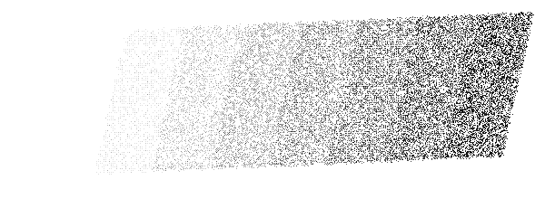
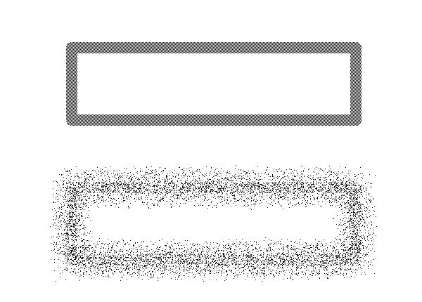
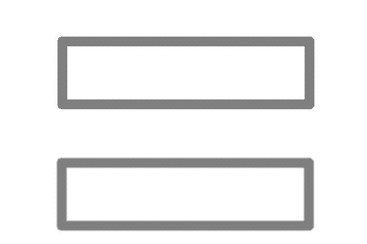

塗りつぶし平行四辺形
塗りつぶし平行四辺形
塗りつぶし平行四辺形は、領域内を塗りつぶした平行四辺形を描く機能です。
塗りつぶしまでの流れは平行四辺形枠と同様に３回の主ボタンクリックにより行います。
形状も平行四辺形枠と同様に平行四辺形（ないし長方形ないし正方形）です。
 通常
通常
選択しているタイルパターンによって塗りつぶします。
ペン形状、太さのスライダ、濃度のスライダは使用しません。

例図
 均一濃度
均一濃度
濃度のスライダで選択している値を混ぜ合わせ濃さとして色混合を行います。
ペン形状、タイルパターン、太さのスライダは使用しません。
領域内を一定の濃度を保って塗りつぶし（色混合）します。

例図
 濃度
濃度
太さのスライダで選択している値の１６倍を領域の分割量とします。
濃度のスライダで選択している値を混ぜ合わせ濃さとして色混合を行います。
ペン形状、タイルパターンは使用しません。
終了点側が最大の濃さとなるよう、開始点側から順々に濃く塗りつぶし（色混合）します。

例図
 霧吹き
霧吹き
太さのスライダで選択している値の１６倍を領域の分割量とします。
濃度のスライダで選択している値を点の描画頻度とします。
ペン形状、タイルパターンは使用しません。
終了点側が最大の濃さとなるよう、開始点側から順々に頻度を増して点を描画します。

例図
 グラデーション
グラデーション
太さのスライダで選択している値の１６倍を領域の分割量とします。
濃度のスライダで選択している値を点の描画頻度、且つ混ぜ合わせ濃さとして色混合を行います。
ペン形状、タイルパターンは使用しません。
終了点側が最大の濃さとなるよう、開始点側から順々に濃く塗りつぶし（色混合）します。
また、終了点側が最大の濃さとなるよう、開始点側から順々に頻度を増して点を描画します。

例図
 拡散
拡散
太さのスライダで選択している値を点の移動範囲とします。
濃度のスライダで選択している値を点の移動頻度とします。
ペン形状、タイルパターンは使用しません。

例図
 ぼかし
ぼかし
領域内の各点について、周囲８点との平均をとった値とします。
ペン形状、タイルパターン、太さのスライダ、濃度のスライダのいづれも使用しません。

例図